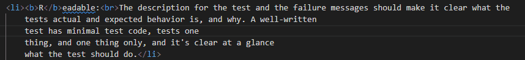
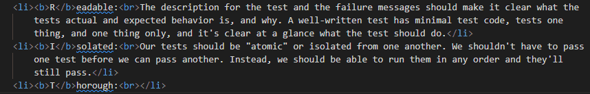
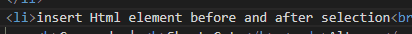
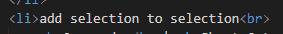
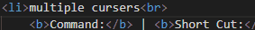
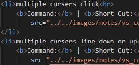

Visual Studio Code (VS code)
useful shortcuts
- combine multiple selected lines into a single line
Command: Join Lines | Short Cut: Ctrl + Alt + j

- select, recurrence of selected pattern
Command: | Short Cut: Ctrl + d

- insert Html element before and after selection
Command: | Short Cut: Alt + w

- add selection to selection
Command: | Short Cut: SELECT + Alt + SELECT + SELECT ...

- multiple cursers click
Command: | Short Cut: Alt + CLICK_LOCATION + CLICK_LOCATION ...

- multiple cursers line down or up
Command: | Short Cut: Ctrl + Alt + ARROW_UP or ARROW_DOWN

- changing the "terminal font"
- open the Command Platte ...
Shift + Ctrl + p
- type
settings.json and open it
- go to the line with the terminal who's family you want to change
for example:"terminal.integrated.defaultProfile.windows": "PowerShell",
- add or change the code:
"terminal.integrated.fontFamily": "MesloLGM
NF"
- fold (close) all html tags of a kind
- select the tag you want to fold
for example <details>
- select the next code with the same characters,
Ctrl + d
- fold all selected tags (or where the curser is located)
Ctrl + Shift + [
- unfold all selected tags (or where the curser is located)
Ctrl + Shift + ]